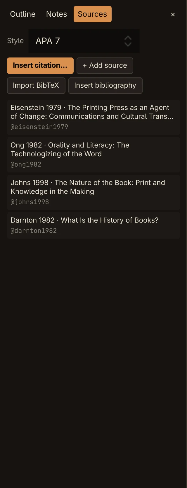
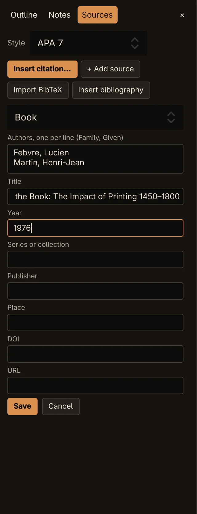
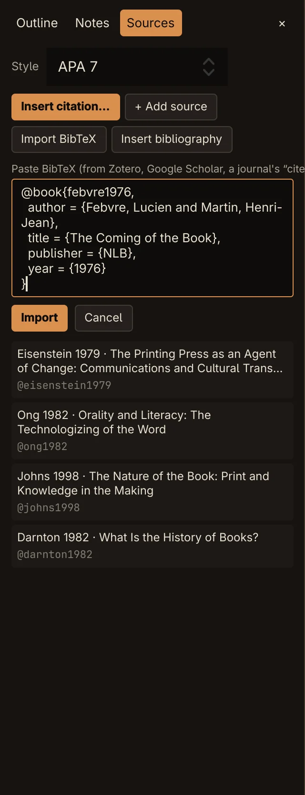
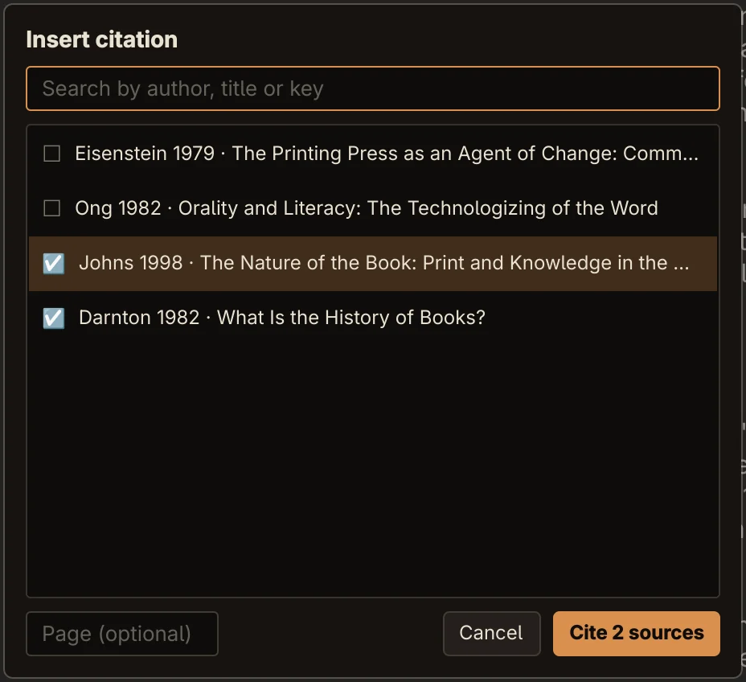
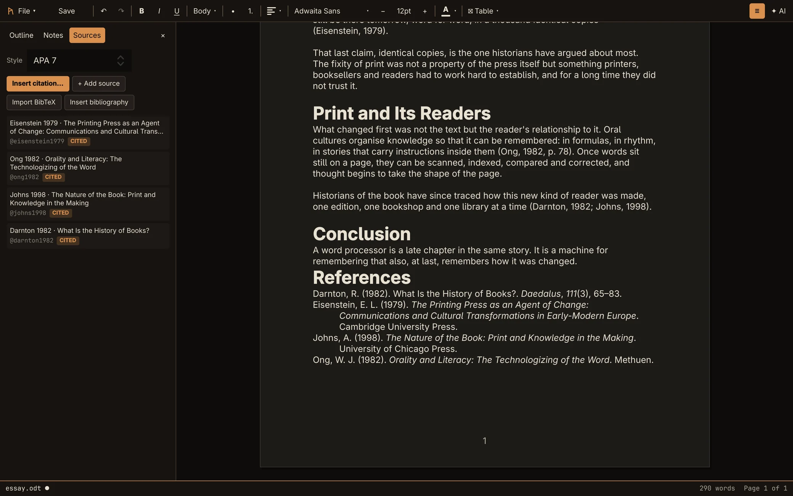
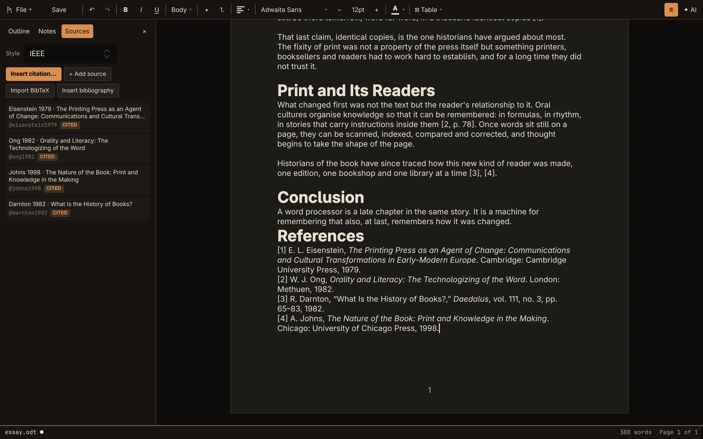

Guide
Citations and bibliography
Keep your sources in the document, cite them as you write, and let the bibliography look after itself.
Your sources
Open the sidebar's Sources tab: ☰ on the toolbar, or Ctrl+K and Show sources.




Adding a source by hand
- Click + Add source and choose the type: Book, Journal article, Book chapter, Web page, Report or Thesis. The fields change to suit it; a journal article, for example, asks for volume, issue and pages.
- Enter the authors one per line, as Family, Given (for example Ong, Walter J.). A line without a comma is read as given names followed by the family name.
- Fill in the title and anything else you have, and click Save. Only the title is required.
Each source gets a short key, such as @ong1982, made from the first author's family name and the year. Click a source to edit it; Delete removes it.
Importing BibTeX


Reference managers, Google Scholar and most journals' "cite" links give you BibTeX. Click Import BibTeX, paste one or more entries, and click Import. The status bar reports how many sources were imported.
Articles, books, chapters, conference papers, theses, reports and web pages are recognised, with their authors and editors, title, journal or book, year, volume, issue, pages, publisher, place, DOI and URL. Entries without a title are skipped. Importing never replaces a source you already have: a clashing key gets a new one.
Citing as you write


- Put the cursor where the citation goes and press Ctrl+Shift+C, or click Insert citation….
- Type to search by author, title or key. Use ↑ ↓ to move.
- Press Return to cite the highlighted source. To cite several at once, click each to tick it; the button then reads Cite N sources. Double-click a source to cite just that one.
- Optionally, enter a page in Page (optional), such as 78 or 12–15.
The citation appears in the current style, for example (Ong, 1982, p. 78). It is one character as far as editing goes: one Backspace removes it, and one undo brings it back.
Not yet You can't edit a citation in place: delete it and insert it again. The page is a page number only, with no chapter or section locators.
Citation styles
Choose the style with the Style picker at the top of the Sources tab, or Ctrl+K and Citation style: …. Every citation in the document and the bibliography change to match.
| Style | A citation | Bibliography heading |
|---|---|---|
| APA 7 | (Smith, 2020, p. 12) | References |
| MLA 9 | (Smith 12) | Works Cited |
| Chicago (author-date) | (Smith 2020, 12) | References |
| IEEE | [1, p. 12] | References |
Two authors are joined (Smith & Jones in APA, Smith and Jones in MLA), and more become et al. IEEE numbers sources in the order they're first cited.




The bibliography
Put the cursor at the end of the document and click Insert bibliography, or Ctrl+K and Insert bibliography. Rune writes a heading (References, or Works Cited for MLA) and an entry for every source you cite. Entries are sorted by author, or in citation order for IEEE.
From then on it keeps itself up to date. Cite a new source, delete a citation, edit a source or switch styles, and the bibliography follows. Deleting a citation and undoing it brings back its entry too. Sources you haven't cited stay out of it. In the Sources tab, the ones you have cited are marked CITED.
In other programs
Each citation is saved as its text, so Word and LibreOffice show your citations and bibliography as ordinary text. Rune also stores which sources each citation points to, and your sources themselves, inside the file. When you open it in Rune again, the citations are live: through .docx as well as .odt.
Watch out If another program saves the file, Rune's data may be lost and the citations would become plain text. LibreOffice is expected to drop it (not verified). Word is documented to keep it (not verified). Changing sources or the style isn't part of undo.
Citations and the AI
The AI sees your sources and cites them the same way. When it writes [@ong1982] or [@ong1982, p. 12] and that key is one of your sources, it becomes a real citation in the current style.
The AI can also add sources it needs. You'll see Added 1 source (unreviewed: check it in Sources), and the source is marked ADDED BY AI · CHECK IT. Rune tests its DOI or link and marks it LINK BROKEN if that doesn't resolve. Check the details, then click Mark reviewed; editing the source marks it reviewed too.